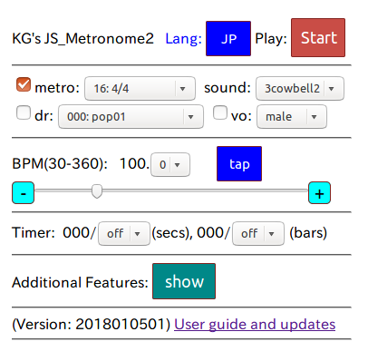
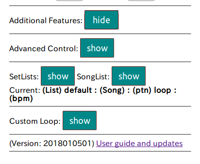
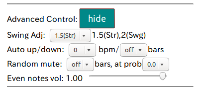
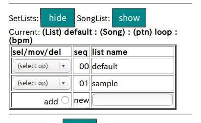
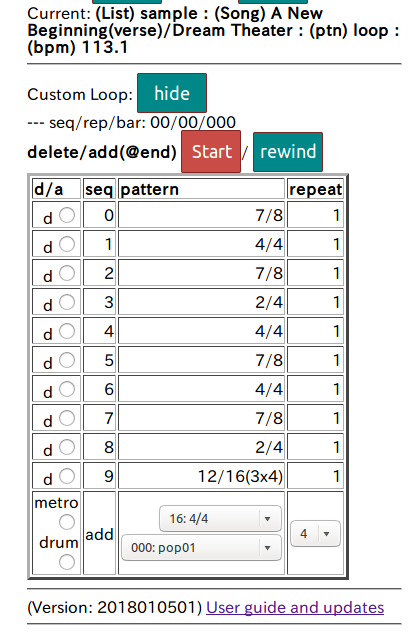

JavaScript Metronome version2 Manual
This screen shot image is NOT clickable

You do not have to read all.
I hope the basic operation is intuitive.
Additional features are, however, not intuitive.
1. Basic operation
From top to bottom, left to right of the screen shot.
Cache will eat storage capacity of your device
after many version ups.
In that case, you may want to clean up the cache
of your web browser from configuration/management menu
of your device.
- JP/US button: display language selection (US English or Japanese)
- Start/Stop button: start/stop playback
- metro/drums(checkbox): select metronome/drum pattern playback
When you select a pattern, this button will be automatically set.
- selector to the right of "metro": metronome pattern selection
- sound(selector): select type of clicks
-- single cowbell, two, three cowbells and others
- selector to the right of "dr": select drum groove pattern
Drum patterns are part of 318 grooves and fills from
Jim Riley, ``Survival Guide for The Modern Drummer'',
Alfred Music, 2015. Drum samples are my original work.
- voice(checkbox): on/off voice count
- male/female: voice pitch selection (female is just modified male voice
to higher pitch. Replaced by free samples on gotsound.org.)
- BPM adjustment(selector): 0.0 to 0.9
- tap: set BPM by tapping the button a few times.
Average(mean) bpm will be set.
Take a break about 5 seconds to reset.
- minus(-) button: decrease one bpm(-1)
- (bpm) slider: quick bpm set
(but hard to set it exactly)
- plus(+) button: increase one bpm(+1)
- (practice) Timer: set in seconds or bars(measures).
Either timer expired earlier will take effect.
- Additional Features: show/hide additional feature menus
- Version: yyyymmdd and 2 digit version number within a day
- User guide and updates: URL link to the US English User guide.
It is now shown in a separate tab/window for convenience.
Note: Modification of patterns will take effect immediately.
So, in case modification during playback causes skip of notes
in the current bar (Stop and Start is safer).
Additional Feature Menus (at shown state)
This screen shot image is NOT clickable.

Click "show" of each feature and find the corresponding menu.
Click "hide" to hide the corresponding menu.
- Advanced Features: press "hide" to hide the followings
- Advanced control (probably for drummers)
- SetLists (SongLists is one of the SetLists)
- Custom Loop
2. Advanced Control(for drummers)
This screenshot image is NOT clickable.

- Advanced Control (hide): press "hide" to hide this menu
- Swing Adj(ustment): Effective only for swing/shuffle patterns
-- Set a value between 1.5 and 2.0 (ex. 1.8)
for lightly swing(swung) beat.
- Auto up/down (-10 to +10): BPM auto incre/decrement by NN bars for
practice. Set off or NN with the selector
- Random mute: Set length of mute bars or off.
Select probability(0(off) to 1.0(max)).
-- For example, 1 bar at probability 1.0 results
in playback one bar and muted bar, alternately.
-- May be useful for time keeping training for a drummer.
- Even notes vol(ume): Decreasing even notes sound level
-- For rhythm(beat) training. At 0.0, even notes are completely muted.
-- In case of triplets, the first two notes are muted at 0.0.
3. SetLists creation and editing
Setlist is useful for a gig or practice session to review
the BPM of each song.
The "default" setlist will be automatically saved.
The "sample" setlist can be modified in the application but
cannot be saved.
You may add your own setlist with a new name based on the
gig or date.
Setlists management
This screenshot image is NOT clickable

- default: (select op(ration) "select this" to choose "default" setlist
-- The songlist will be automatically shown
-- Note: It is empty until you add a song
- sample: Sample lists (editable but cannot be saved)
- add button (at the bottom of the table):
Enter name in the list name column and then press "add" (radio) button
-- Empty setlist will be created
- Changing setlist order:
move to top, move after NN, delete this
-- (Warning: NO undo feature available)
Setlist example ("sample")
The "sample" setlist can be modified but cannot be saved.
The original "sample" setlist will be uploaded when you start the program.
So, you can try playback, editing safely.
This screenshot is NOT clickable

- (select op):
select this, move to top, move after NN, delete this
-- same as in setlist operation
- type: "bar" denotes one bar pattern,
"loop" presents a multi-bar custom loop
consists of preset patterns
- Adding a song (some practice recommended): one bar pattern is easier
than a custom loop
- Target is the current playable click pattern or custom loop.
Also set the BPM for the song.
- Add song name at the bottom row of the Songlist table
- Click add current bar, or (add current) loop
-- Note: Empty loop (undefined) cannot be registered to the table.
4. Creating a custom loop with preset patterns(clicks or drum patterns)
This screenshot image cannot be clicked

- d/a: delete or add(at the bottom),
(NO move to/modify feature)
- Select a preset click pattern or drum pattern,
set (bar) repeat times
- Click "metro" to add the selected click pattern
-- Click "drum" for the selected drum pattern
- Play: Start/Stop(above the table), rewind to the beginning
-- Start/Stop at the top of the window does NOT work for loop
-- Entire loop will be repeated until press "Stop".
In case, you like automatic stop, use the Timer in the main menu.
Note: Tempo(bpm) cannot be registered. All the bpm in the registered
patterns are set at playback with Basic operation.
Setting different bpm for each pattern in the loop table is not
possible.
Set the bpm for the loop with Basic Operation when you add the
loop to a songlist of a setlist.
Missing features
- Changing order of patterns, repeat times modification (delete and add only)
- Register a loop in a loop as a pattern
- Modification of a loop in a songlist
--> edit the loaded loop and add it to the songlist with new name,
then delete the old loop in the songlist.
- Saving a loop -- You may save in a songlist(setlist)
Example loop (in "sample" setlist)
Loaded sample loop can be modified but cannot be saved as the same name.
(Can be saved in a different name.)
This screenshot image cannot be clicked

- A New Beginning/Dream Theater -- A first part of verse 1.
- This is a very complex example.
Let us start with 4 bar phrase such as 4/4(16beat) x 3 + 15/16 bar.
5. Summary of drum patterns
収録数: 238 patterns(20180107) from
References: Jim Riley, ``Survival Guide for The Modern Drummer'', Alfred Music, 2015.
Lists(Not all 318 grooves in the textbook
are not included in the program)
- pop001--060: Chapter 1. Pop Drumming
-- Pop music (incl. modern rock)
- 001--010: Basic
- 011--020: Syncopated
- 021--041: with ghost notes
- 41: 16 beat swing(swung)
- 42: 5 kinds for the same groove
hc(hihat close), ho(hihat open), rd(ride), cr(crash), ft(floor tom)
- 51--53: four on the floor (quarter note bass)
53: hihat with both hands and accented.
- 54: hihat with both hands
- 55-56: hihat with single hand
- 57: 12/8 ballad
- 58: change of pace
- 59, 60: tom grooves
- blues061--081: Chapter 2. Blues
- 061--071: (standard) blues
- 078--081: 12/8, 81(swing)
- swing087-138: Chapter 3. Swing (comping patterns are not included)
- 087--098: hihat, ride, crash, kick variations
- 136: tom beat
- 137--138: odd time signature
- cntr139--172, train152-0158: Chapter 4. Country
- 139--147: swing(swung) variations
- 152--154: train beat (in 8th note, recommended playback at 180+bpm)
- (now working)
- rock179--182, Motown: Chapter 5. Early Rock and Motown
- 179--182: Early Rock
- 185--189: Motown
- disco, machine: Chapter 6. Dance and Electronic
- disco: (my high school age:-) dance beats
- machine: Simulated(emulated) electronic beat
- NNN: Chapter 7. Funk and Fusion
- NNN: Chapter 8. Odd-Time Signatures
- NNN: Chapter 9. Metal and Double Bass
- NNN: Chapter 10. Grooves from Around the World
-- The grooves in this chapter are very interesting.
goto at kmgoto.jp